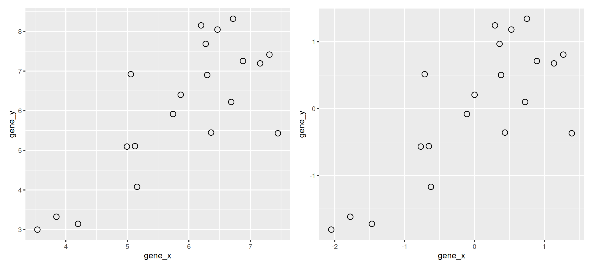
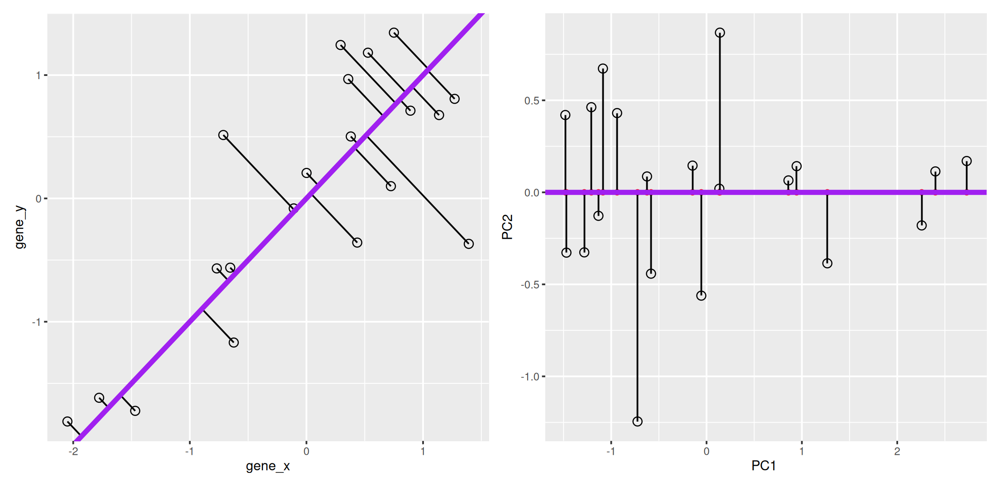
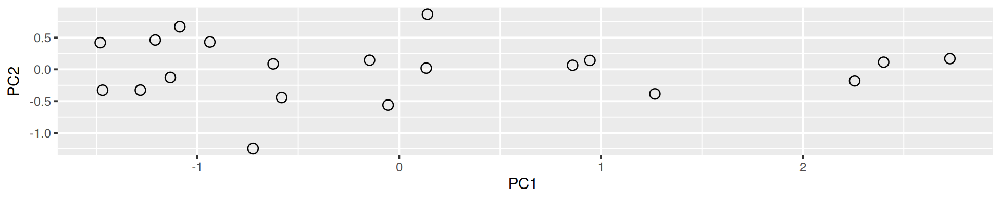

Chapter 9 Dimensionality reduction
9.1 Introduction
In this chapter, we are going to learn about dimensionality reduction, also called ordination. The goal of dimensionality reduction is to transform a high-dimensinal data into data of lesser dimensions while minimise the loss of information.
Dimensionality reduction is used as a data transformation technique for input to other machine learning methods such as classifications, or as a very efficient visualisation technique, which is the use case we will focus on here. We are going to focus on a widerly used method called Principal Component Analysis (PCA).
We are going to use the following dataset to illustrate some important concepts that are scale and central to PCA. The small dataset show below represents the measurement of genes x and y in 20 samples. We will be using the scaled and centred version of this data.
Figure 9.1: Raw (left) and scale/centred (right) expression data for genes x and y in 20 samples
9.2 Lower-dimensional projections
The goal of dimensionality reduction is to reduce the number of dimensions in a way that the new data remains useful. One way to reduce a 2-dimensional data is by projecting the data onto a lines. Below, we project our data on the x and y axes. These are called linear projections.
Figure 9.2: Projection of the data on the x (left) and y (right) axes.

In general, and in particular in the projections above, we loose information when reducing the number of dimensions (above, from 2 (plane) to 1 (line)). In the first example above (left), we loose all the measurements of gene y. In the second example (right), we loose all the measurements of gene x.
The goal of dimensionality reduction is to limit this loss.
We know already about linear regression. Below, we use the lm function to regress y onto x (left) and x onto y (right). These regression lines give us an approximate linear relationship between the expression of genes x and y. The relationship differs depending on which gene we choose to be the predictor adn the response.
Figure 9.3: Regression of y onto x (left) minimisises the sums of squares of vertical residuals (red). Regression of x onto y (right) minimisises the sums of squares of horizontal residuals (orange).

We now want a line that minimises distances in both directions, as shown below. This line, called principal compoment, is also the ones that maximises the variance of the projections along itself.
Figure 9.4: The first prinicpal component minimises the sum of squares of the orthogonal projections.
The second principal component is then chosen to be orthogonal to the first one. In our case above, there is only one possibility.
Figure 9.5: The second prinicpal component is orthogonal to the second one.

In the example above the variance, the variance along the PCs are 1.77 and 0.23. The first one explains 88.6% or that variance, and the second one merely 11.4%. This is also reflected in the different scales along the x and y axis.
To account for these differences in variation along the different PCs, it is better to represent a PCA plot as a rectangle, using an aspect ratio that is illustrative of the respective variances.
Figure 9.6: Final principal component analysis of the data.
9.3 The new linear combinations
Principal components are linear combinations of the variables that were originally measured, they provide a new coordinate system. The PC in the previous example is a linear combination of gene_x and gene_y, more specifically
\[ PC = c_{1} ~ gene_{x} + c_{2} ~ gene_{y} \]
It has coefficients \((c_1, c_2)\), also called loading.
PCA in general will find linear combinations of the original variables. These new linear combinations will maximise the variance of the data.
9.4 Summary and application
Principal Component Analysis (PCA) is a technique that transforms the original n-dimensional data into a new space.
These new dimensions are linear combinations of the original data, i.e. they are composed of proportions of the original variables.
Along these new dimensions, called principal components, the data expresses most of its variability along the first PC, then second, …
Principal components are orthogonal to each other, i.e. non-correlated.

Figure 9.7: Original data (left). PC1 will maximise the variability while minimising the residuals (centre). PC2 is orthogonal to PC1 (right).
In R, we can use the prcomp function. A summary of the prcomp output shows that along PC1 along, we are able to retain close to 92% of the total variability in the data.
pca_xy <- prcomp(xy)
summary(pca_xy)## Importance of components:
## PC1 PC2
## Standard deviation 1.3308 0.4784
## Proportion of Variance 0.8856 0.1144
## Cumulative Proportion 0.8856 1.0000This pca_xy variable is an object of class prcomp. To learn what it contains, we can look at its structure with str and read the ?prcomp manual page.
str(pca_xy)## List of 5
## $ sdev : num [1:2] 1.331 0.478
## $ rotation: num [1:2, 1:2] 0.707 0.707 -0.707 0.707
## ..- attr(*, "dimnames")=List of 2
## .. ..$ : chr [1:2] "gene_x" "gene_y"
## .. ..$ : chr [1:2] "PC1" "PC2"
## $ center : Named num [1:2] 4.05e-16 1.53e-17
## ..- attr(*, "names")= chr [1:2] "gene_x" "gene_y"
## $ scale : logi FALSE
## $ x : num [1:20, 1:2] -2.728 -2.4 -2.257 -0.945 -0.14 ...
## ..- attr(*, "dimnames")=List of 2
## .. ..$ : NULL
## .. ..$ : chr [1:2] "PC1" "PC2"
## - attr(*, "class")= chr "prcomp"We are going to focus on two elements:
- sdev contains the standard deviations along the respective PCs (as also displayed in the summary). From these, we can compute the variances, the percentages of variance explained by the individual PCs, and the cumulative variances.
(var <- pca_xy$sdev^2)## [1] 1.7711407 0.2288593(pve <- var/sum(var))## [1] 0.8855704 0.1144296cumsum(pve)## [1] 0.8855704 1.0000000- x contains the coordinates of the data along the PCs. These are the values we could use to produce the PCA plot as above by hand.
pca_xy$x## PC1 PC2
## [1,] -2.72848772 0.17019003
## [2,] -2.40018291 0.11371158
## [3,] -2.25654153 -0.17987834
## [4,] -0.94491834 0.14224604
## [5,] -0.14044618 0.86760695
## [6,] -0.85917747 0.06485259
## [7,] -1.26714805 -0.38570171
## [8,] -0.13426336 0.01962124
## [9,] 0.14678704 0.14527416
## [10,] 1.08677349 0.67252884
## [11,] 0.93793985 0.43069778
## [12,] 0.62416628 0.08630825
## [13,] 0.05477564 -0.56143151
## [14,] 1.20838962 0.46257985
## [15,] 0.58230063 -0.44200381
## [16,] 1.48091889 0.42011071
## [17,] 1.13374563 -0.12764440
## [18,] 1.28218805 -0.32631519
## [19,] 1.46938699 -0.32768480
## [20,] 0.72379344 -1.24506826plot(pca_xy$x)
9.5 Visualisation
A biplot features all original points re-mapped (rotated) along the first two PCs as well as the original features as vectors along the same PCs. Feature vectors that are in the same direction in PC space are also correlated in the original data space.
biplot(pca_xy)Figure 9.8: A biplot shows both the variables (arrows) and observations of the PCA analysis.

One important piece of information when using PCA is the proportion of variance explained along the PCs (see above), in particular when dealing with high dimensional data, as PC1 and PC2 (that are generally used for visualisation), might only account for an insufficient proportion of variance to be relevant on their own. This can be visualised on a screeplot, that can be produced with
plot(pca_xy)Figure 9.9: Screeplot showing the variances for the PCs.

► Question
Repeat the analysis above with the
xy0data, that you can load from therWSBIM1207data. First scale it, then repeat the PCA analysis as shown above.Load the
cptac_protdata, scale the data (see below for why scaling is important), then perform the PCA analysis and interpret it. Also produce a PCA for PCs 2 and 3.In the exercise above, the PCA was performed on the features (proteins). Transpose the data and produce a PCA of the samples.
► Solution


9.6 Pre-processing and missing values with PCA
We haven’t looked at other prcomp parameters, other that the first one, x. There are two other ones that are or importance, in particular in the light of the section on pre-processing above, which are center and scale.. The former is set to TRUE by default, while the second one is set the FALSE.
► Question
Perform a PCA analysis on the mtcars dataset with and without scaling. Compare and interpret the results.
► Solution
Real datasets often come with missing values. In R, these should be encoded using NA. Unfortunately, PCA cannot deal with missing values, and observations containing NA values will be dropped automatically. This is a viable solution only when the proportion of missing values is low. Otherwise, it is possible to impute missing values (which often requires great care) or use an implementation of PCA such as non-linear iterative partial least squares (NIPALS), that support missing values.
Finally, we should be careful when using categorical data in any of the unsupervised methods. Categories are generally represented as factors, which are encoded as integer levels, and might give the impression that a distance between levels is a relevant measure (which it is not, unless the factors are ordered). In such situations, categorical data can be dropped, or it is possible to encode categories as binary dummy variables. For example, if we have 3 categories, say A, B and C, we would create two dummy variables to encode the categories as:
## x y
## A 1 0
## B 0 1
## C 0 0so that the distance between each category are approximately equal to 1.
9.7 The full PCA workflow
In this section, we will describe the detailed PCA analysis and interpretation of two real-life proteomics datasets. Both of these datasets are available in the pRolocdata package.
9.7.1 Extra-embryonic endoderm differentiation in mouse embryonic stem cells
We are first going to focus on the data from Mulvey et al. (2015), where they present the Dynamic proteomic profiling of extra-embryonic endoderm differentiation in mouse embryonic stem cells (Mulvey et al. 2015Mulvey, C M, C Schröter, L Gatto, D Dikicioglu, I Baris Fidaner, A Christoforou, M J Deery, et al. 2015. “Dynamic Proteomic Profiling of Extra-Embryonic Endoderm Differentiation in Mouse Embryonic Stem Cells.” Stem Cells, June. doi:10.1002/stem.2067.).
During mammalian preimplantation development, the cells of the blastocyst’s inner cell mass differentiate into the epiblast and primitive endoderm lineages, which give rise to the fetus and extra-embryonic tissues, respectively. Extra-embryonic endoderm (XEN) differentiation can be modeled in vitro by induced expression of GATA transcription factors in mouse embryonic stem cells. Here, we use this GATA-inducible system to quantitatively monitor the dynamics of global proteomic changes during the early stages of this differentiation event and also investigate the fully differentiated phenotype, as represented by embryo-derived XEN cells. Using mass spectrometry-based quantitative proteomic profiling with multivariate data analysis tools, we reproducibly quantified 2,336 proteins across three biological replicates and have identified clusters of proteins characterized by distinct, dynamic temporal abundance profiles. We first used this approach to highlight novel marker candidates of the pluripotent state and XEN differentiation. Through functional annotation enrichment analysis, we have shown that the downregulation of chromatin-modifying enzymes, the reorganization of membrane trafficking machinery, and the breakdown of cell-cell adhesion are successive steps of the extra-embryonic differentiation process. Thus, applying a range of sophisticated clustering approaches to a time-resolved proteomic dataset has allowed the elucidation of complex biological processes which characterize stem cell differentiation and could establish a general paradigm for the investigation of these processes.
► Question
Load the mulvey2015 data from the pRolocdata package. Check its class familiarise yourself with its experimental design stored in the phenoData slot that can be accessed with the pData function.
► Solution
Here, we will want to do a PCA analysis on the samples. We want to remap the 18 samples from a 2337-dimensional space into 2, possibly 3 dimensions. This will require to transpose the data matrix before passing it to the prcomp function.
► Question
- Run a PCA analysis on the samples of the
mulvey2015data and display a summary of the results.
► Solution
► Question
Assuming we are happy with a reduced space explaining 90% of the variance of the data, how many PCs do we need?
Visualise the variance captured by the 18 PCs. To do so, you can use the
fviz_screeplotfunction from thefactoextrapackage.
► Solution
► Question
Visualise your PCA analysis on a biplot. You can use the
fviz_pcafunction from thefactoextrapackage, or thefviz_pca_indfunction to focus on the individuals (the rows of the orgininal input).Use the
habillageargument of thefviz_pca_indfunction to highlight the time experimental variable. Interpret the figures in the light of the experimental design.
► Solution

► Question
To visualise the data in 3 dimension, you can use the plot3d function from the rgl package, that provides means to rotate the cube along the three first PCs.
► Solution
9.7.2 A map of the mouse pluripotent stem cell spatial proteome
In this section, we are going to use PCA to explore spatial map of mouse pluripotent stem cell by Christoforou et al. (Christoforou et al. 2016Christoforou, A, C M Mulvey, L M Breckels, A Geladaki, T Hurrell, P C Hayward, T Naake, et al. 2016. “A Draft Map of the Mouse Pluripotent Stem Cell Spatial Proteome.” Nat Commun 7: 8992. doi:10.1038/ncomms9992.).
Knowledge of the subcellular distribution of proteins is vital for understanding cellular mechanisms. Capturing the subcellular proteome in a single experiment has proven challenging, with studies focusing on specific compartments or assigning proteins to subcellular niches with low resolution and/or accuracy. Here we introduce hyperLOPIT, a method that couples extensive fractionation, quantitative high-resolution accurate mass spectrometry with multivariate data analysis. We apply hyperLOPIT to a pluripotent stem cell population whose subcellular proteome has not been extensively studied. We provide localization data on over 5,000 proteins with unprecedented spatial resolution to reveal the organization of organelles, sub-organellar compartments, protein complexes, functional networks and steady-state dynamics of proteins and unexpected subcellular locations. The method paves the way for characterizing the impact of post-transcriptional and post-translational modification on protein location and studies involving proteome-level locational changes on cellular perturbation. An interactive open-source resource is presented that enables exploration of these data.
9.8 Additional exercises
Page built: 2019-11-13